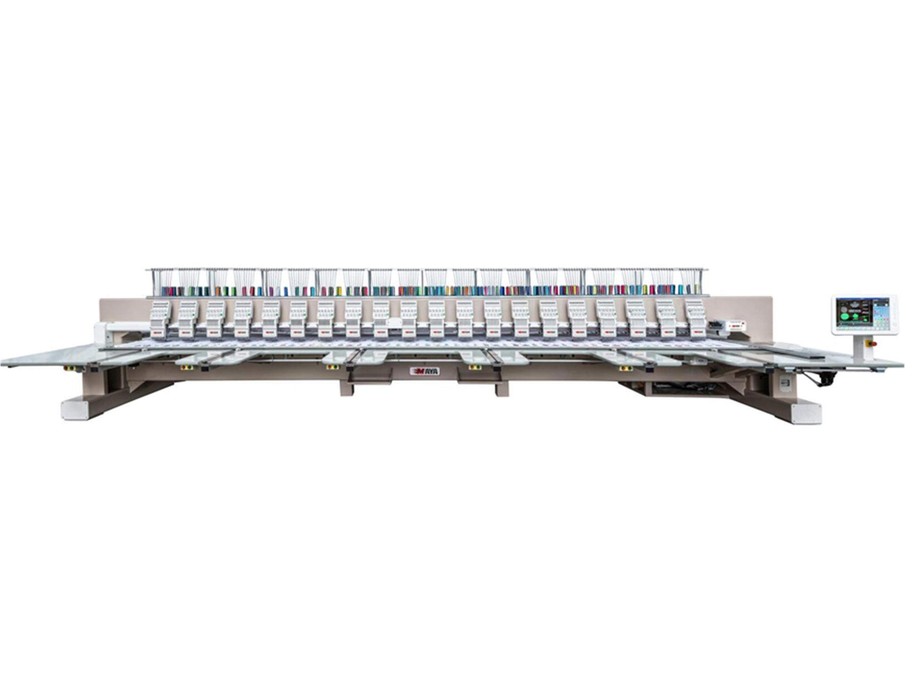
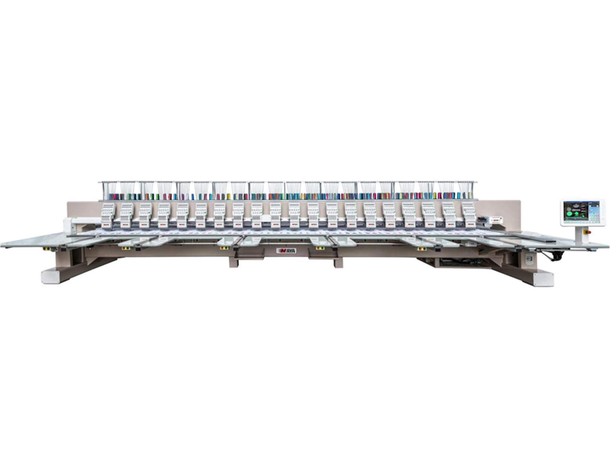

Modeller
Endüstriyel Çok İğneli

Yüksek hızlı ve seri üretime uygun endüstriyel model.
Ev Tipi

Hobi ve küçük atölyeler için ideal kullanım.
Şenil Zincir

Zincir nakışta yüksek performans sunar.
Nakış makineleri endüstri için kusursuz işçilik sağlar.
Nakış makineleri, kumaş üzerine desen ve yazı işlemek için kullanılan mekanik veya bilgisayar kontrollü cihazlardır. Endüstriyel çok iğneli makineler seri üretimde tercih edilirken, ev tipi makineler hobi amaçlı kullanılır.
Yüksek hızlı ve seri üretime uygun endüstriyel model.
Hobi ve küçük atölyeler için ideal kullanım.
Zincir nakışta yüksek performans sunar.

 

E-posta: mailmailmail.com